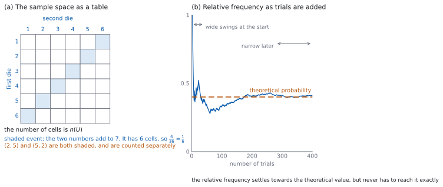

SL 4.5 — Introduction to probability（確率の基礎）
- trial（試行）・outcome（結果）・sample space（標本空間）・event（事象）を区別できる。
- equally likely outcomes（同様に確からしい結果）のとき、\(P(A) = \dfrac{n(A)}{n(U)}\) で確率を出せる。
- complementary events（余事象）を使って、\(P(A') = 1 - P(A)\) を使える。
- sample space を表やリストで書き出せる。
- relative frequency（相対度数）と、理論上の確率のちがいを述べられる。
- expected number of occurrences（期待される回数）を求められる。
The idea
1. ことばを分ける
| 英語 | 日本語 | 中身 |
|---|---|---|
| trial | 試行 | \(1\) 回やること（さいころを \(1\) 回投げる） |
| outcome | 結果 | \(1\) 回の結果（\(3\) が出た） |
| sample space \(U\) | 標本空間 | 起こりうる結果をすべて集めたもの |
| event \(A\) | 事象 | 注目している結果の集まり（偶数が出る） |
event は sample space の一部です。 「偶数が出る」という event は、\(\{2, 4, 6\}\) という結果の集まりです。
\(n(A)\) は \(A\) に入っている結果の個数、\(n(U)\) は全部の個数を表します。
2. equally likely なら、数えるだけ
equally likely outcomes（同様に確からしい結果）とは、どの結果も同じ確からしさで起こることです。そのときだけ、確率は数えれば出ます。
\[ P(A) = \frac{n(A)}{n(U)} \tag{1}\]
\(P(A) = \dfrac{n(A)}{n(U)}\) は、公式集の 4.5 の欄にあります。試験中に配られるので、覚える必要はありません。
覚えるのは、この式が使える条件のほうです。 どの結果も同様に確からしいときにだけ使えます。
「同様に確からしい」が成り立たない例もあります。 ゆがんださいころ、当たりの大きさがちがうルーレット、天気。そういうときは、数えても確率になりません。
3. 確率の性質
\(A\) は sample space の一部なので、equally likely のときは \(n(A)\) が \(0\) 以上 \(n(U)\) 以下で、確率も \(0\) 以上 \(1\) 以下になります。同様に確からしくないときも、どの結果の確率も \(0\) 以上で、全部を足すと \(1\) なので、その一部である \(A\) の確率は \(0\) 以上 \(1\) 以下です。
まとめると、次のことが成り立ちます。
- \(0 \le P(A) \le 1\)
- 結果が有限個の場面では、\(P(A) = 0\) は「起こらない」、\(P(A) = 1\) は「必ず起こる」。
- sample space をすき間なく分けたとき、確率の合計は \(1\) です。
\(1\) より大きい確率や、負の確率が出たら、計算がまちがっています。 答えを書く前に、ここを見てください。
この項目であつかうのは、結果が有限個の場面（さいころ、カード、人の集まり）だけです。そこでは「確率 \(0\) = 起こらない」で問題ありません。
いっぽう SL 4.9 の正規分布のように、値が連続にとれる場面では、ちょうど \(1\) つの値をとる確率は \(0\) です。それでも、実際にはどれか \(1\) つの値が出ます。「確率 \(0\)」と「起こらない」が同じなのは、有限個の場面に限った話です。
4. complementary events
complementary event \(A'\)（余事象）は、「\(A\) が起こらない」という事象です。\(A\) と \(A'\) で sample space をちょうど \(2\) つに分けます。
\[ P(A) + P(A') = 1 \tag{2}\]
\(P(A) + P(A') = 1\) は、公式集の 4.5 の欄にあります。
使いどころは「〜でない」「少なくとも \(1\) つ」です。直接数えると場合が多いとき、余事象のほうが速くなります。
5. sample space の書き方
書き出せる大きさなら、書き出します。 方法は \(2\) つあります。
- リスト … \(\{HH, HT, TH, TT\}\) のように並べる。
- 表 … \(2\) つのものを組にするとき（図 1 の (a)）。行と列を \(2\) つの試行にします。
表のマス目の数が \(n(U)\) です。 コイン \(1\) 枚とさいころ \(1\) 個なら \(2 \times 6 = 12\) マスです。
順番のちがうものを区別します。 さいころ \(2\) 個で \((1, 4)\) と \((4, 1)\) は別の結果です。区別しないと、どの結果も同様に確からしい、が崩れます。
6. relative frequency
relative frequency（相対度数）は、実際にやってみた結果から出す確率です。
\[ \text{relative frequency} = \frac{(\text{起こった回数})}{(\text{試行の回数})} \tag{3}\]
理論上の確率と一致するとはかぎりません。 公平なコインを \(60\) 回投げても、表がちょうど \(30\) 回になるほうがめずらしいくらいです。
回数を増やすと、理論上の値に近づいていきます（図 1 の (b)）。ただし、\(1\) 回ごとに近づくのではなく、上下しながら近づきます。
この式は公式集にありません。 ただ、割り算をするだけです。
7. expected number of occurrences
\(n\) 回の試行で、確率 \(p\) の事象が何回起こると期待できるかは
\[ (\text{expected number}) = n \times p \tag{4}\]
です。
この式は、公式集の 4.5 の欄にはありません。 二項分布の平均 \(E(X) = np\) として、4.8 の欄に出てきます。ここでは、かけ算をするだけです。
整数にならないことがあります。 それでかまいません。「\(128\) 人のクラスで欠席の確率が \(0.1\) なら、期待される欠席者は \(12.8\) 人」です。\(12.8\) 人という人はいませんが、長い目で見た \(1\) 日あたりの平均を表しています。
「必ずその回数だけ起こる」ではありません。 期待される回数は平均であって、保証ではありません。
確率の計算は、Paper 1 でも Paper 2 でも手でできます。数えて、割って、引くだけです。
答えは分数のままで書けます。 \(\dfrac{4}{36}\) は \(\dfrac{1}{9}\) まで約分します。小数にする必要はありません。

Why it works
なぜ、equally likely のときだけ数えられるのでしょうか。 確率の合計は \(1\) です。結果が \(n(U)\) 個あって、どれも同じ確からしさなら、\(1\) つあたりの確率は \(\dfrac{1}{n(U)}\) です。
ここで使っているのは、第 3 節の「すき間なく分けたとき、確率の合計は \(1\)」という見方です。重ならない結果の確率は、足せます。 だから結果 \(n(U)\) 個の確率を全部足すと \(1\) になり、どれも同じなら \(1\) つあたり \(\dfrac{1}{n(U)}\) です。
事象 \(A\) には結果が \(n(A)\) 個入っているので、その確率は \(\dfrac{1}{n(U)}\) を \(n(A)\) 回足したもの、つまり \(\dfrac{n(A)}{n(U)}\) になります。
同じ確からしさでなければ、この足し算ができません。 ゆがんださいころで「\(6\) が出る」の確率は、\(\dfrac{1}{6}\) ではありません。数えても答えになりません。
なぜ、\(P(A) + P(A') = 1\) なのでしょうか。 どの結果も、\(A\) に入るか、\(A\) に入らないかのどちらか一方です。両方に入ることも、どちらにも入らないこともありません。
だから \(n(A) + n(A') = n(U)\) です。両辺を \(n(U)\) で割れば
\[ \frac{n(A)}{n(U)} + \frac{n(A')}{n(U)} = 1 \]
になります。
なぜ、relative frequency は理論値に近づくのでしょうか。 \(1\) 回ごとの結果はばらつきますが、回数を分母にしているからです。
ずれの大きさそのものは、回数が増えると大きくなります。\(10\) 回では \(1\) 回か \(2\) 回のずれでも、\(1000\) 回では \(10\) 回や \(20\) 回ずれます。それでも、ずれの増え方が回数の増え方よりずっとゆっくりなので、回数で割った相対度数のほうは、上下しながら幅がせまくなっていきます。
なぜ、期待される回数が整数でなくてよいのでしょうか。 これは「今日の欠席者数の予想」ではなく、同じことを何日もくり返したときの \(1\) 日あたりの平均だからです。平均は整数になる理由がありません。
\(1\) 日ごとに見れば、欠席者は \(0\) 人か \(1\) 人か \(2\) 人か…と整数です。それを何日ぶんも平均すれば、\(12.8\) のような値になります。
Worked examples
問題文は英語です。意味が理解できなかったら、問題文の下の「日本語訳」を開いてください。解説は日本語です。
例題も演習も、すべて電卓なしで解けます。 答えは分数のままで書いてかまいません。
例題 1 A bag contains \(5\) red balls, \(3\) blue balls and \(4\) green balls. One ball is taken at random.
(a) Write down \(n(U)\).
(b) Find the probability that the ball is red.
(c) Find the probability that the ball is not blue.
(d) Explain why the three probabilities \(P(\text{red})\), \(P(\text{blue})\) and \(P(\text{green})\) add to \(1\).
日本語訳
袋の中に赤玉 \(5\) 個、青玉 \(3\) 個、緑玉 \(4\) 個が入っています。\(1\) 個を無作為に取り出します。
(a) \(n(U)\) を書きなさい。
(b) 玉が赤である確率を求めなさい。
(c) 玉が青でない確率を求めなさい。
(d) \(3\) つの確率 \(P(\text{赤})\)、\(P(\text{青})\)、\(P(\text{緑})\) の和が \(1\) になる理由を説明しなさい。
(a) 玉は全部で
\[ n(U) = 5 + 3 + 4 = 12 \]
(b) 無作為に取るので、どの玉も同様に確からしいです（式 1）。
\[ P(\text{red}) = \frac{5}{12} \]
(c) 余事象を使います（式 2）。\(P(\text{blue}) = \dfrac{3}{12}\) なので
\[ P(\text{not blue}) = 1 - \frac{3}{12} = \frac{9}{12} = \frac{3}{4} \]
(d) Explain why なので、英語で理由を書きます。
試験ではこう書く
Every ball in the bag is exactly one of red, blue and green, so the three events have no ball in common and together they contain all \(12\) balls. The three numerators therefore add to \(n(U)\), and dividing by \(n(U)\) gives a total probability of \(1\).
（袋の中のどの玉も、赤・青・緑のちょうど \(1\) つである。よって \(3\) つの事象には共通の玉がなく、あわせて \(12\) 個すべてを含む。したがって \(3\) つの分子の和は \(n(U)\) になり、\(n(U)\) で割れば確率の合計は \(1\) になる、という意味です。）
検算（(b) について）。 \(1\) より小さいか見ます。 \(\dfrac{5}{12} < 1\) ✓ \(\dfrac{12}{5}\) としていたら、上下が逆です。
検算（(c) について、直接数えます）。 青でない玉を数えます。 赤 \(5\) 個と緑 \(4\) 個で \(9\) 個です。\(\dfrac{9}{12} = \dfrac{3}{4}\) ✓ 余事象を使った答えと一致します。
検算（(d) について）。 足します。 \(\dfrac{5}{12} + \dfrac{3}{12} + \dfrac{4}{12} = \dfrac{12}{12} = 1\) ✓
(a) \[n(U) = 12\]
(b) \[P(\text{red}) = \frac{5}{12}\]
(c) \[P(\text{not blue}) = 1 - \frac{3}{12} = \frac{3}{4}\]
(d) each ball is exactly one colour, so the three events contain all \(12\) balls between them and their numerators add to \(n(U)\)
例題 2 Two fair six-sided dice are rolled, and the number on each is recorded.
(a) Write down \(n(U)\).
(b) Find the probability that both numbers are even.
(c) Find the probability that the two numbers add to \(5\).
(d) Hence find the probability that the two numbers do not add to \(5\).
日本語訳
公平な \(6\) 面のさいころを \(2\) 個投げ、それぞれの出た数を記録します。
(a) \(n(U)\) を書きなさい。
(b) どちらの数も偶数である確率を求めなさい。
(c) \(2\) つの数の和が \(5\) になる確率を求めなさい。
(d) これをもとに、\(2\) つの数の和が \(5\) にならない確率を求めなさい。
(a) \(1\) 個目に \(6\) 通り、\(2\) 個目に \(6\) 通りなので（第 5 節）
\[ n(U) = 6 \times 6 = 36 \]
(b) それぞれが偶数になるのは \(2, 4, 6\) の \(3\) 通りずつです。
\[ n(A) = 3 \times 3 = 9, \qquad P(A) = \frac{9}{36} = \frac{1}{4} \]
(c) 和が \(5\) になる組を書き出します。
\[ (1,4), \quad (2,3), \quad (3,2), \quad (4,1) \]
\[ P = \frac{4}{36} = \frac{1}{9} \]
(d) 余事象です（式 2）。
\[ 1 - \frac{1}{9} = \frac{8}{9} \]
検算（(a) について）。 \(1\) 個目を固定して数えます。 \(1\) 個目が \(1\) のときの結果が \(6\) 通りで、それが \(1\) 個目の \(6\) 通りぶんあります ✓ \(12\) としていたら、\(2\) 個の目を足してしまっています。
検算（(b) について、別の道すじ）。 偶数でない場合も数えます。 どちらも奇数が \(3 \times 3 = 9\) 通り、片方だけ偶数が \(3 \times 3 + 3 \times 3 = 18\) 通りです。\(9 + 18 + 9 = 36\) ✓ 全部のマス目と一致します。
検算（(c) について、和の側から）。 和ごとの通り数を数えます。 和が \(2\) で \(1\) 通り、\(3\) で \(2\)、\(4\) で \(3\)、\(5\) で \(4\)、\(6\) で \(5\)、\(7\) で \(6\) 通り。ここまでで \(21\) 通りです。和が \(8\) 以上は \(5, 4, 3, 2, 1\) で \(15\) 通り、合計 \(36\) ✓ 和が \(5\) のところが \(4\) 通りで合っています。
検算（(d) について）。 足して \(1\) になるか見ます。 \(\dfrac{1}{9} + \dfrac{8}{9} = 1\) ✓
(a) \[n(U) = 6 \times 6 = 36\]
(b) \[P = \frac{9}{36} = \frac{1}{4}\]
(c) \((1,4), (2,3), (3,2), (4,1)\) \[P = \frac{4}{36} = \frac{1}{9}\]
(d) \[1 - \frac{1}{9} = \frac{8}{9}\]
例題 3 A school has \(640\) students. On any school day, the probability that a particular student is absent is \(0.045\).
(a) Find the expected number of students absent on a school day.
(b) On one day, \(41\) students were absent. Find the relative frequency of absence on that day, correct to three significant figures.
(c) Explain why the answer to part (a) is not a whole number, and state what it means.
(d) Find the expected total number of student-absences over \(200\) school days.
日本語訳
ある学校に \(640\) 人の生徒がいます。ある授業日に、特定の生徒が欠席する確率は \(0.045\) です。
(a) ある授業日に欠席すると期待される生徒の人数を求めなさい。
(b) ある日、\(41\) 人が欠席しました。その日の欠席の相対度数を、有効数字 \(3\) 桁で求めなさい。
(c) (a) の答えが整数でない理由を説明し、それが何を意味するかを述べなさい。
(d) \(200\) 授業日のあいだに欠席すると期待される延べ人数を求めなさい。
(a) \(n \times p\) です（式 4）。
\[ 640 \times 0.045 = 28.8 \]
(b) 起こった回数を試行の回数で割ります（式 3）。
\[ \frac{41}{640} = 0.0640625 = 0.0641 \ (3 \text{ s.f.}) \]
(c) Explain why なので、英語で理由を書きます。
試験ではこう書く
The expected number is an average taken over many days, not a prediction of what happens on one day. On any single day the number absent is a whole number, but the average of many whole numbers need not be a whole number. The value \(28.8\) means that over a long run of days the mean number absent per day is \(28.8\).
（期待される人数は、多くの日にわたってとった平均であって、ある \(1\) 日に何が起こるかの予測ではない。どの \(1\) 日をとっても欠席者数は整数だが、多くの整数の平均が整数になるとはかぎらない。\(28.8\) という値は、長い日数で見たときの \(1\) 日あたりの平均欠席者数が \(28.8\) 人であることを意味する、という意味です。）
(d) \(1\) 日あたり \(28.8\) 人を \(200\) 日ぶんです。
\[ 28.8 \times 200 = 5760 \]
検算（(a) について）。 割合で見ます。 \(0.045\) はおよそ \(\dfrac{1}{22}\) で、\(640 \div 22 \approx 29\) です ✓ \(28.8\) と近い値です。
検算（(b) について）。 (a) と比べます。 その日は \(41\) 人で、期待の \(28.8\) 人より多いです。相対度数 \(0.0641\) も、確率 \(0.045\) より大きくなっています ✓ 向きが一致します。
検算（(d) について、別の道すじ）。 先に全体の回数を出します。 \(640 \times 200 = 128\,000\) 回の「生徒・日」があり、\(128\,000 \times 0.045 = 5760\) ✓ (d) と一致します。
(a) \[640 \times 0.045 = 28.8\]
(b) \[\frac{41}{640} = 0.0641 \ (3 \text{ s.f.})\]
(c) it is an average over many days; on one day the number is a whole number, but the mean of many whole numbers need not be
(d) \[28.8 \times 200 = 5760\]
例題 4 A coin is flipped \(200\) times and lands on heads \(116\) times.
(a) Find the relative frequency of heads.
(b) Write down the theoretical probability of heads if the coin is fair.
(c) Find the expected number of heads in \(200\) flips of a fair coin.
(d) Comment on whether this experiment shows that the coin is not fair.
日本語訳
あるコインを \(200\) 回投げたところ、\(116\) 回表が出ました。
(a) 表の相対度数を求めなさい。
(b) コインが公平である場合の、表の理論上の確率を書きなさい。
(c) 公平なコインを \(200\) 回投げたときに期待される表の回数を求めなさい。
(d) この実験がコインは公平でないことを示しているかどうかについて述べなさい。
(a)
\[ \frac{116}{200} = 0.58 \]
(b) 公平なら、表と裏が同様に確からしいので
\[ P(\text{heads}) = \frac{1}{2} = 0.5 \]
(c)
\[ 200 \times 0.5 = 100 \]
(d) Comment on なので、英語で述べます。
試験ではこう書く
The relative frequency \(0.58\) is higher than \(0.5\), so there were \(16\) more heads than expected. A fair coin need not give exactly \(100\) heads, so a difference on its own is not proof of bias. However \(16\) is a large difference for \(200\) flips, so this result does give some reason to doubt that the coin is fair. At this level no test is available to decide, and repeating the experiment with many more flips would settle it.
（相対度数 \(0.58\) は \(0.5\) より大きく、期待より \(16\) 回多く表が出た。公平なコインでも表がちょうど \(100\) 回になるとはかぎらないので、差があること自体はかたよりの証拠ではない。しかし \(200\) 回で \(16\) 回の差は大きく、公平でないと疑う理由にはなる。この段階では判定する検定が使えないので、もっと多く投げて調べることになる、という意味です。）
検算（(a) について）。 \(1\) 以下か見ます。 \(0.58 \le 1\) ✓ 相対度数は確率と同じで、\(0\) 以上 \(1\) 以下です。
検算（(c) について）。 裏の側でも出します。 裏の期待される回数も \(200 \times 0.5 = 100\) で、合計は \(200\) ✓ 投げた回数と一致します。
検算（(d) について、裏の側）。 裏の相対度数を出します。 裏は \(200 - 116 = 84\) 回で、\(\dfrac{84}{200} = 0.42\) です。\(0.58 + 0.42 = 1\) ✓ 期待される \(100\) 回との差は、表も裏も \(16\) 回で同じ大きさです。
(a) \[\frac{116}{200} = 0.58\]
(b) \[0.5\]
(c) \[200 \times 0.5 = 100\]
(d) \(0.58 > 0.5\); a fair coin need not give exactly \(100\) heads, but \(16\) extra heads in \(200\) flips is a large difference, so this gives some reason to doubt fairness without proving it
Common errors
確率は \(\dfrac{n(A)}{n(U)}\) です（式 1）。\(1\) より大きくなったら、逆にしています。
数えて出せるのは、どの結果も同様に確からしいときだけです（第 2 節）。
順番のちがう結果は別の結果です（第 5 節）。区別しないと個数が合いません。
余事象は \(1 - P(A)\) です（式 2）。確率は負になりません。
期待される回数は平均です（第 7 節）。整数にならないこともあります。
実験の結果は、理論値のまわりで上下します（第 6 節）。\(1\) 回の実験では決まりません。
Exercises
各問題に、折りたたみが \(3\) つ付いています。日本語訳、解答例（答案用紙に書くべきこと。英語です）、解説（なぜそうなるか。日本語です）。
まず自分で解いて、次に解答例と見くらべてください。解説は、合わなかったときだけ開けば十分です。
1 A fair six-sided die is rolled once. Find the probability that the number shown is prime.
日本語訳
公平な \(6\) 面のさいころを \(1\) 回投げます。出た数が素数である確率を求めなさい。
primes on a die: \(2, 3, 5\)
\[P = \frac{3}{6} = \frac{1}{2}\]
\(1\) から \(6\) のうち素数は \(2, 3, 5\) の \(3\) つです（式 1）。
検算。 \(1\) つずつ判定します。 \(1\) は約数が \(1\) つだけなので素数ではありません。\(4 = 2 \times 2\)、\(6 = 2 \times 3\) なので素数ではありません。残った \(2, 3, 5\) が素数です ✓ \(3\) つで合っています。
\(1\) は素数ではありません。 ここを入れてしまうと \(\dfrac{4}{6}\) になります。
2 A bag contains \(7\) white counters and \(5\) black counters. One counter is taken at random. Find the probability that it is white, and the probability that it is not white.
日本語訳
袋の中に白の駒が \(7\) 個、黒の駒が \(5\) 個入っています。\(1\) 個を無作為に取り出します。それが白である確率と、白でない確率を求めなさい。
\[n(U) = 12\]
\[P(\text{white}) = \frac{7}{12}, \qquad P(\text{not white}) = \frac{5}{12}\]
全部で \(12\) 個です。白でないのは黒だけなので、直接数えても余事象を使っても同じです（式 2）。
検算。 足します。 \(\dfrac{7}{12} + \dfrac{5}{12} = 1\) ✓
検算（余事象）。 \(1 - \dfrac{7}{12} = \dfrac{5}{12}\) ✓ 数えた答えと一致します。
約分できないときは、そのままで書きます。 \(\dfrac{7}{12}\) はこれ以上約分できません。
3 Two fair coins are flipped. Set out the sample space as a table, and find the probability of getting exactly one head.
日本語訳
公平なコインを \(2\) 枚投げます。標本空間を表にして書き出し、表がちょうど \(1\) 枚出る確率を求めなさい。
| second coin \(H\) | second coin \(T\) | |
|---|---|---|
| first coin \(H\) | \(HH\) | \(HT\) |
| first coin \(T\) | \(TH\) | \(TT\) |
\[n(U) = 4\]
\[P(\text{exactly one head}) = \frac{2}{4} = \frac{1}{2}\]
表の行を \(1\) 枚目、列を \(2\) 枚目にします（第 5 節）。\(HT\) と \(TH\) は別のマスなので \(n(U) = 4\) で、\(n(A) = 2\) です。
検算。 ほかの場合も数えます。 表 \(0\) 枚が \(1\) 通り、\(1\) 枚が \(2\) 通り、\(2\) 枚が \(1\) 通りで、合計 \(4\) ✓
\(\{0\) 枚\(, 1\) 枚\(, 2\) 枚\(\}\) も「起こりうる結果をすべて集めたもの」ではあります。 ただし、その \(3\) つは同様に確からしくありません（\(1\) 枚が \(2\) 通り、\(0\) 枚と \(2\) 枚が \(1\) 通りずつ）。だから 式 1 は使えません。数えて確率を出したいときは、\(HH, HT, TH, TT\) のように同様に確からしい結果で書き出します。
4 For an event \(A\), \(P(A) = 0.35\). Write down \(P(A')\), and find the expected number of times \(A\) occurs in \(400\) trials.
日本語訳
ある事象 \(A\) について \(P(A) = 0.35\) です。\(P(A')\) を書き、\(400\) 回の試行で \(A\) が起こると期待される回数を求めなさい。
\[P(A') = 1 - 0.35 = 0.65\]
\[400 \times 0.35 = 140\]
5 A spinner has \(8\) equal sectors numbered \(1\) to \(8\). Find the probability that the spinner lands on a multiple of \(3\).
日本語訳
\(8\) 等分された扇形に \(1\) から \(8\) の数が書かれたスピナーがあります。スピナーが \(3\) の倍数で止まる確率を求めなさい。
multiples of \(3\): \(3, 6\)
\[P = \frac{2}{8} = \frac{1}{4}\]
\(8\) 等分なので、どの数も同様に確からしいです（第 2 節）。\(1\) から \(8\) の中の \(3\) の倍数は \(3\) と \(6\) だけです。
検算。 \(9\) を入れていないか見ます。 \(9\) は \(3\) の倍数ですが、スピナーにありません ✓
検算（大きさ）。 \(3\) の倍数でない数を数えます。 \(1, 2, 4, 5, 7, 8\) の \(6\) 個です ✓ \(2 + 6 = 8\) で、スピナーの数と一致します。
「\(3\) の倍数」に \(3\) 自身が入ります。 忘れると \(\dfrac{1}{8}\) になります。
6 A gardener plants \(300\) seeds. The probability that a seed germinates is \(0.82\). Find the expected number of seeds that germinate.
日本語訳
ある庭師が \(300\) 個の種をまきます。\(1\) つの種が発芽する確率は \(0.82\) です。発芽すると期待される種の個数を求めなさい。
\[300 \times 0.82 = 246\]
7 A fair die is rolled \(60\) times and a six appears \(14\) times. Explain why this does not mean that the die is biased.
日本語訳
公平なさいころを \(60\) 回投げたところ、\(6\) が \(14\) 回出ました。これがさいころにかたよりがあることを意味しない理由を説明しなさい。
the expected number is \(60 \times \dfrac{1}{6} = 10\), and results above and below \(10\) occur by chance; \(14\) is only \(4\) more than expected, so \(60\) rolls is far too few to show bias
Explain why なので、期待される回数と、ばらつきの両方を書きます（第 6 節）。
検算。 \(6\) 以外の側でも見ます。 \(6\) 以外は \(60 - 14 = 46\) 回で、期待される回数は \(60 \times \dfrac{5}{6} = 50\) 回です ✓ ずれは表と裏で同じ \(4\) 回になっています。
検算（相対度数）。 \(\dfrac{14}{60} \approx 0.233\) で、\(\dfrac{1}{6} \approx 0.167\) です ✓ 差はありますが、\(60\) 回では確かめられません。
試験ではこう書く
For a fair die the expected number of sixes in \(60\) rolls is \(60 \times \dfrac{1}{6} = 10\). The number actually obtained varies from one set of \(60\) rolls to another, and results both above and below \(10\) occur by chance. Getting \(14\) instead of \(10\) is a small difference of this kind, so \(60\) rolls is far too few to show that the die is biased.
8 The probability that a bus is late is \(0.2\). A student says that in the next \(10\) journeys the bus will be late exactly twice. Identify the error, and state what the value \(2\) does represent.
日本語訳
バスが遅れる確率は \(0.2\) です。ある生徒が、次の \(10\) 回の乗車のうち、バスはちょうど \(2\) 回遅れる、と言いました。誤りを指摘し、値 \(2\) が何を表しているかを述べなさい。
\[10 \times 0.2 = 2\]
\(2\) is the expected number, that is the average over many sets of \(10\) journeys; the bus could be late any number of times from \(0\) to \(10\)
Identify the error なので、期待される回数の意味に戻ります（第 7 節）。計算自体は正しいです。
検算。 起こりうる回数を数えます。 遅れる回数は \(0, 1, 2, \ldots, 10\) の \(11\) 通りありえます ✓ そのうち \(1\) つだけが「必ず起こる」ということはありません。
検算（整数でない場合）。 もし \(8\) 回の乗車なら \(8 \times 0.2 = 1.6\) です ✓ 「ちょうど \(1.6\) 回」は起こりえないので、期待される回数が「実際の回数」でないことが分かります。
試験ではこう書く
The calculation \(10 \times 0.2 = 2\) is correct, but \(2\) is the expected number of late journeys, not a prediction of what will happen. It is the average number of late journeys over many sets of \(10\) journeys. In any particular set of \(10\) journeys the bus could be late any number of times from \(0\) to \(10\).
9 Explain why the probability of an event can never be greater than \(1\).
日本語訳
事象の確率が \(1\) より大きくなることがない理由を説明しなさい。
an event is part of the sample space, so \(n(A) \le n(U)\), and \(\dfrac{n(A)}{n(U)} \le 1\)
Explain why なので、個数の関係から書きます（第 3 節）。
検算。 いちばん大きい場合を見ます。 \(A\) が sample space そのものなら \(n(A) = n(U)\) で、\(P(A) = 1\) です ✓ これが最大です。
検算（いちばん小さい場合）。 \(A\) に結果が \(1\) つも入っていなければ \(n(A) = 0\) で \(P(A) = 0\) です ✓
試験ではこう書く
An event is a set of outcomes taken from the sample space, so every outcome in the event is also in the sample space. When the outcomes are equally likely this gives \(n(A) \le n(U)\) and so \(\dfrac{n(A)}{n(U)} \le 1\). When they are not, the same conclusion follows because the probabilities of all the outcomes are non-negative and add to \(1\). The value \(1\) occurs when the event contains every outcome.
10 A drawing pin is dropped \(50\) times and lands point-up \(31\) times. A student says the probability of landing point-up is exactly \(\dfrac{31}{50}\). Comment on this statement.
日本語訳
画びょうを \(50\) 回落としたところ、\(31\) 回針が上を向いて止まりました。ある生徒が、針が上を向く確率はちょうど \(\dfrac{31}{50}\) だと言いました。この主張について述べなさい。
\(\dfrac{31}{50}\) is the relative frequency from \(50\) trials, which is an estimate of the probability, not the probability itself; a drawing pin has no symmetry making the two outcomes equally likely, so the probability cannot be counted and only more trials would improve the estimate
Comment on なので、どこまで言えるかを書きます（第 6 節）。
検算。 もう \(50\) 回やったらどうなるか考えます。 同じ \(31\) 回になるとはかぎりません ✓ 値が変わるなら、「ちょうど」ではありません。
検算（数えられるか）。 同様に確からしいと言える理由があるか探します。 さいころやコインとちがい、画びょうには上向きと上向きでないを同じ確からしさにする形の対称性がありません ✓ だから 式 1 は使えず、実験して見積もるしかありません。
試験ではこう書く
The value \(\dfrac{31}{50}\) is the relative frequency observed in \(50\) trials, so it is an estimate of the probability rather than the probability itself. A different set of \(50\) trials would almost certainly give a different fraction. A drawing pin has no symmetry that makes the two outcomes equally likely, so the probability cannot be found by counting; it can only be estimated, and a larger number of trials would give a better estimate.